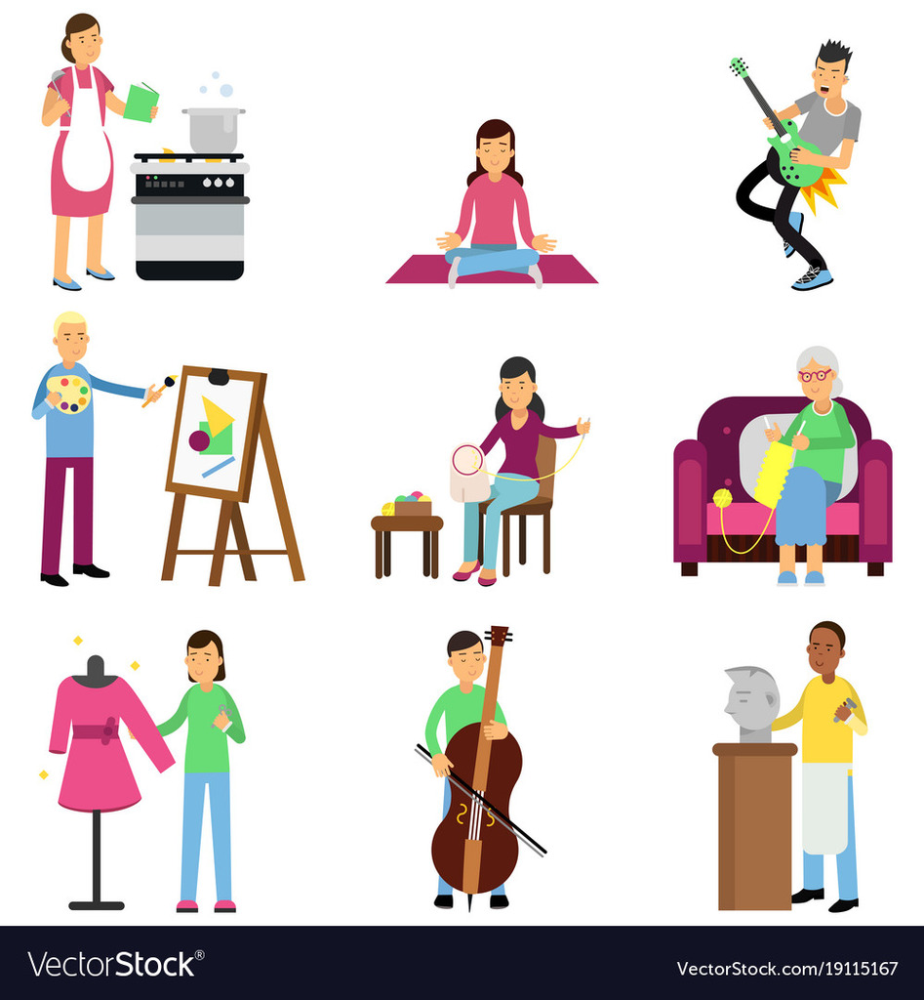

| PEDRO JOSE ALONZO LOYO |  | ||
| No. | Nombre | Descripcion | Años |
| 1 | Pesca | La pesca es uno de mis pasatiempos preferidos y que solia realizar en familia. | 16 |
| 2 | Bicicleta | Unos de los pasatiempos que mas realizaba en mi niñez era el salir en bicicleta con mis amigos, esto era muy bueno para relajarme y olvidarme de los problemas. | 70 |